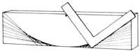

Flex-Sheet-Mirror costs about $3.50 a square toot, and it your local glass dealer doesn't have it in stock, he can order it for you from National Products Co., 900 Baxter Ave., Louisville, Ky. 40204. You'll need six square feet, or $21 worth. Or you can do the same job for less money by substituting two sheets of 12"" X 36"" 2-mil reflective mylar avail able from S.U.N., Box 306, Bascom, Ohio 44809. The mylar is priced at $3.75 a sheet plus shipping costs ($1.75 within 600 miles of Bascom ... $2.75 for greater distances). The mylar will do the job . . it just won't last as long as the mirrors